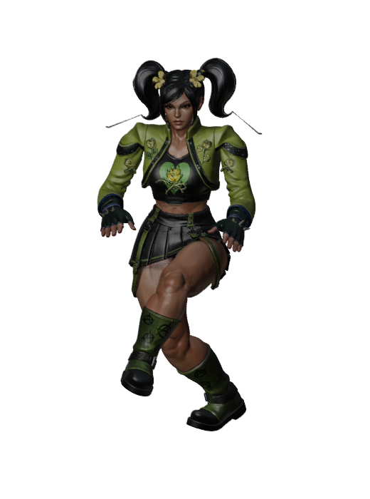
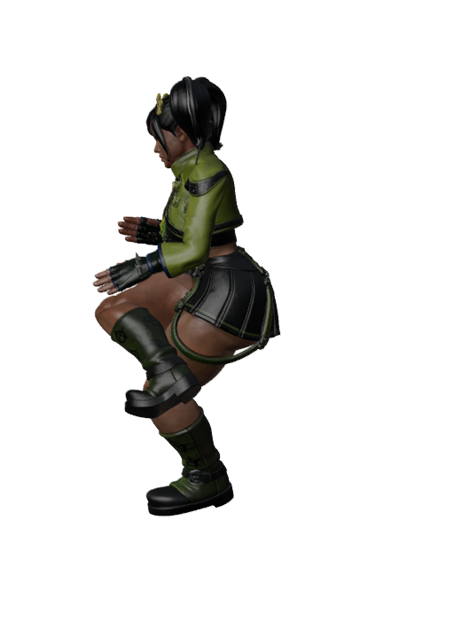

Tripo Auto-Intake
“As soon as a Tripo model comes in you need to get it rigged automatically ASAP to the character rig that it goes to.” — owner, 2026-10-21
Runbook: tools/tripo-intake/README.md. The intake never guesses the fighter, never clobbers a staged rig, and REFUSEs instead of guessing facing. Wiring the game stays a reviewed step.
1 · Drop a Tripo model
The page reads the GLB header locally (nothing is uploaded) and checks it is an unrigged Tripo static before you stage it.
2 · Recent intakes
3 · Demo: intake-rigged Kinpo attire 1
Rigged end-to-end by the intake (Blender 4.0.2 + GameRig backend, facing
+X measured by the intake's own two-cue gate — the earlier k-NN batch
assumed +Z). The model itself loads in the
suite viewer
(?fighter=kinpo-intake-demo). Renders below were viewed before
wiring (rest pose + the anim_check spike frames):


Full proof: DRYRUN.md (facing report, gate JSONs, all 9 renders, steps.log).
4 · How it works
inbox/<fighter>/attire<N>.glb
→ env check → claim (fighter id = roster dir, never guessed)
→ sha256 + ledger.json → gltf_codec decode
→ facing_check.py (cue1: gamerig foot-vs-shin · cue2: assets.js feetFacingCue)
confidence gate: cues agree AND residual ≤ 15° AND toe offset ≥ 1.5% height
else REFUSE — never guess (a wrong rotation bakes backwards weights)
→ rig_tripo_static.py --facing (Blender 4.0.2 + GameRig, the proven Zui path)
→ validate + anim_check gates on rig_report.json (all green or FAILED)
→ stage roster/<fighter>/attires/attire<N>/model-rigged.glb + WIRING-CHECKLIST.md
→ archive the inbox original to outbox/ (never modified, never deleted)
Manual trigger is recommended (python3 tools/tripo-intake/intake.py --scan);
a cron should only notify, never auto-rig unattended. Exit codes: 0 done · 2 refused · 3 failed.